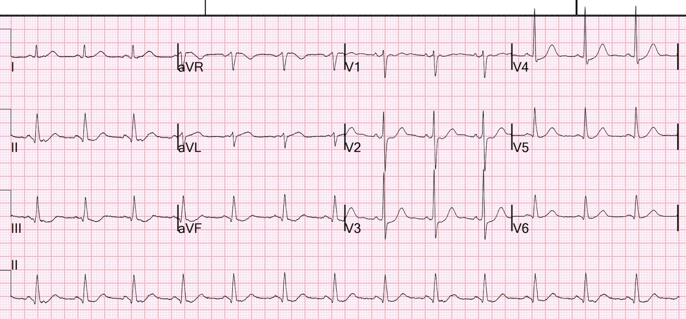
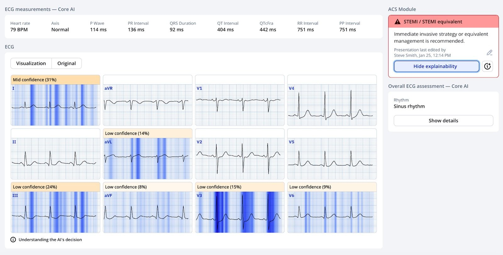
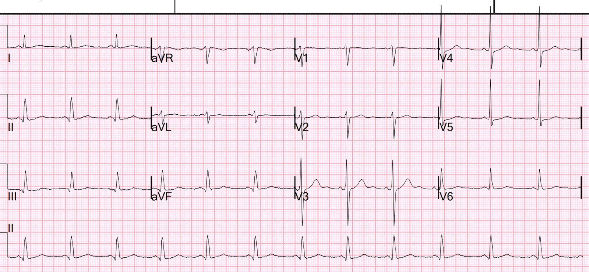
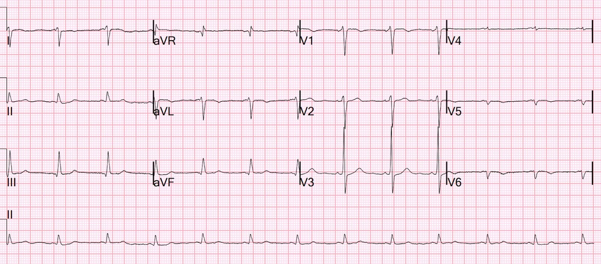
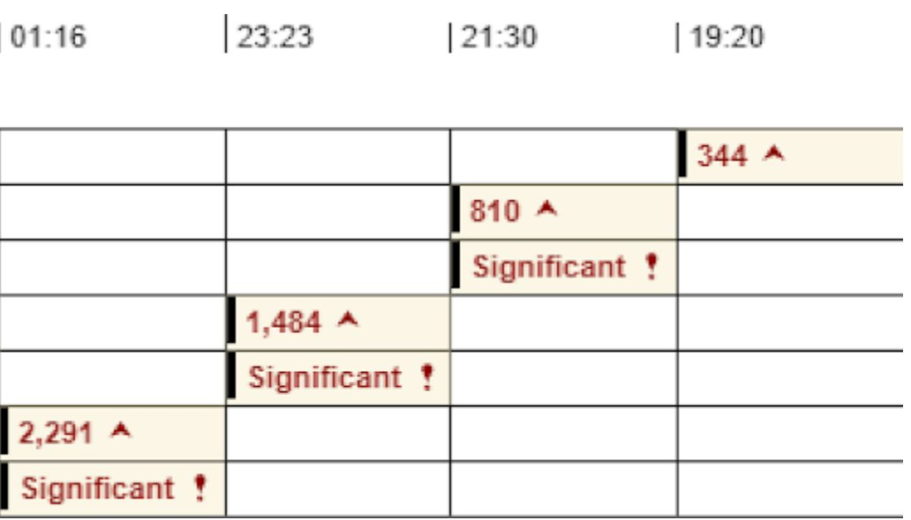
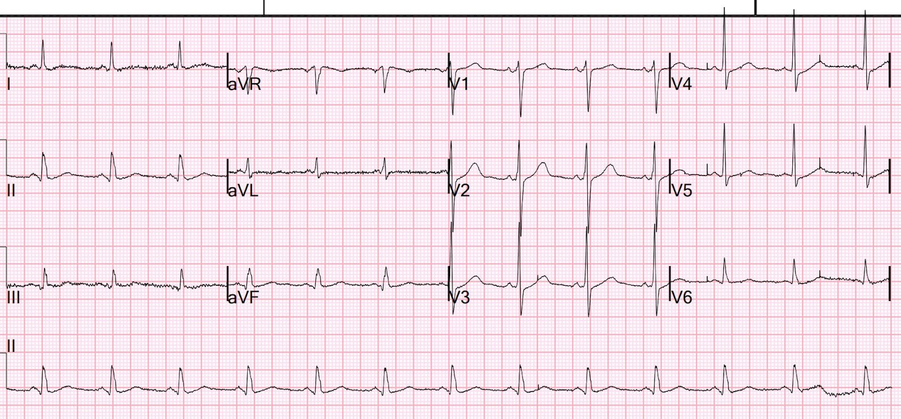
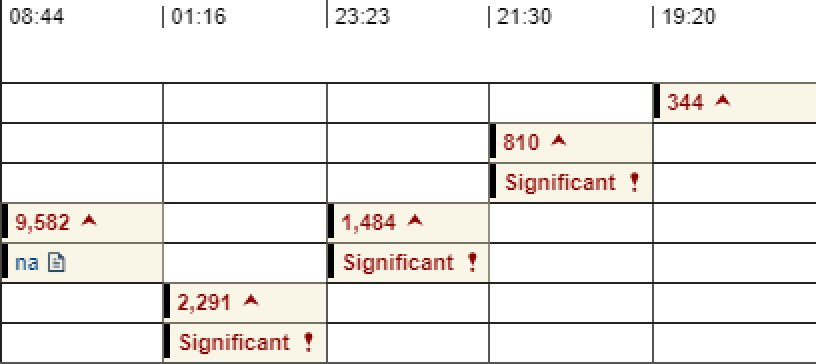
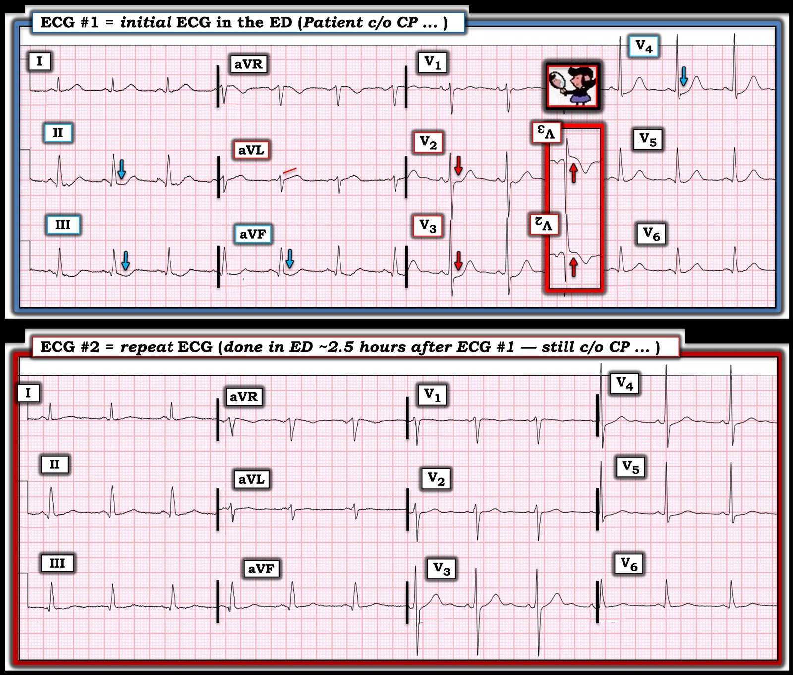

01/03/2025 — Trả ngay (vào buổi tối) hay trả sau kèm tiền lãi (vào nửa đêm)
Bản dịch tiếng Việt của bài "Pay now (in the evening) or pay later with interest (in the middle of the night)." – Dr. Smith’s ECG Blog. Giữ nguyên toàn bộ 9 hình ảnh của bản gốc.
Một bệnh nhân nam khoảng 50 tuổi đến khoa cấp cứu (ED) vào buổi tối để được đánh giá vì đau ngực bắt đầu lúc 1600. Ông mô tả cảm giác nóng rát và đè ép, giống như trào ngược dạ dày–thực quản (GERD). Ông cho biết cơn đau này giống với cảm giác khi ông bị nhồi máu cơ tim 4 năm trước, hiện đã đặt 4 stent.
(Bệnh sử gợi ý tinh tế rằng đây có thể lại là một OMI cấp.)
Bệnh nhân thường dùng lisinopril 40 mg mỗi ngày, atorvastatin 80 mg mỗi ngày và ASA 81 mỗi ngày. Đã không dùng lisinopril 2 tuần vì hết thuốc.
Một điện tâm đồ được ghi 16 phút sau khi bệnh nhân đến viện:


Bạn nghĩ gì?
Smith: rõ ràng chẩn đoán OMI thành sau và bên cao (ST chênh xuống V2-V4, kèm sóng T tối cấp ở aVL và ST chênh xuống soi gương ở các chuyển đạo dưới).
Mô hình AI Queen of Hearts của PMCardio:


Dĩ nhiên Queen cũng cho rằng đây là OMI cấp, vì cùng những lý do trên.
Lưu ý: Hướng dẫn đồng thuận chuyên gia ACC 2022 về đau ngực nêu rằng “tương đương STEMI thành sau” là một dấu hiệu của tắc động mạch vành cấp. Hướng dẫn không đưa ra lời khuyên về cách chẩn đoán dấu hiệu này, nhưng chúng tôi đã công bố rằng, trong bối cảnh đau ngực cấp, BẤT KỲ ST chênh xuống nào tối đa ở V1-V4 đều có độ đặc hiệu 96% đối với OMI cần PCI.
Phòng thông tim (cath lab) đã không được kích hoạt.
Thay vào đó, khoa Tim mạch được mời hội chẩn và họ khuyến nghị Nitro tĩnh mạch (và dĩ nhiên cả ASA và heparin). NTG được chỉnh liều lên trên 120 mcg/phút.
Cơn đau ngực kéo dài nhiều giờ.
Ở thời điểm 2.5 giờ, một điện tâm đồ khác được ghi. Bệnh nhân vẫn còn đau ngực.


Các dấu hiệu đã cải thiện, đặc biệt ở aVL và các chuyển đạo dưới.
Vẫn còn một ít ST chênh xuống ở V4 và V5.
Nhiều khả năng đã có tái tưới máu tự phát, nhờ sự hỗ trợ của aspirin và heparin.
Thời điểm 2.45 giờ, kèm chuyển đạo phía sau:


ST chênh xuống ở V3 vẫn còn, dù tinh tế
V4-V6 thực chất là V7–V9.
Các chuyển đạo này cho thấy sóng T đảo ngược, gợi ý nhồi máu thành sau đã được tái tưới máu.
Dưới đây là các giá trị troponin trong khi bệnh nhân ở khoa cấp cứu, với cơn đau dai dẳng:


Ngay cả khi bạn không tin vào điện tâm đồ, thì từ giá trị troponin đầu tiên lẽ ra đã phải rõ ràng rằng đây là nhồi máu cơ tim cấp. Và với cơn đau kháng trị (dai dẳng), bệnh nhân phải được đưa đến phòng thông tim ngay lập tức.
Rất thường gặp tình trạng những bệnh nhân “NSTEMI NGUY CƠ RẤT CAO” như vậy không được chụp mạch vành trong ＜2 giờ như hướng dẫn khuyến cáo. Trong nghiên cứu này của Lupu và cs., chỉ 6% bệnh nhân đủ điều kiện được điều trị theo đúng hướng dẫn.
Phòng thông tim mãi đến nửa đêm mới được kích hoạt, 7 giờ sau khi bệnh nhân đến viện.
Do chờ đợi, không chỉ bệnh nhân có thể chịu tổn hại, mà ê-kíp thông tim còn phải vào viện lúc nửa đêm thay vì vào buổi tối.
Ngay trước khi chụp mạch vành:


Vẫn còn một ít ST chênh xuống ở V2-V4
Cuối cùng cơn đau đã hết ngay trước khi chụp mạch vành.
Chụp mạch vành:
–“Tổn thương nghi là thủ phạm gây nhồi máu cơ tim không ST chênh lên kèm khó chịu ngực kháng trị của bệnh nhân (dù triệu chứng đã hết trước khi đến phòng thông tim) là mảng xơ vữa nứt vỡ ở đoạn xa động mạch mũ kèm thuyên tắc tại chỗ gây tắc đoạn xa OM 3.”
Như vậy, có vẻ cơn đau ban đầu là do tắc ở đoạn xa động mạch mũ. Cơn đau hết khi đoạn đó được tái tưới máu, mặc dù huyết khối đã trôi đi và gây tắc nhánh OM3 nhỏ ở đoạn xa.
“–Các stent đặt trước đây ở LAD đoạn gần và RCA vẫn thông, nhưng có tắc mạch tự nhiên ở RCA đoạn xa, phía sau bờ của stent xa nhất.”
“–Cũng ghi nhận bệnh lý nặng ở nhánh chéo thứ hai và nghi tắc hoàn toàn mạn tính một nhánh của LPL 1.”
Giá trị troponin đo lần cuối là 9500, một nhồi máu cơ tim khá lớn. (2/3 số ca STEMI có đỉnh troponin I thế hệ thứ 4 lớn hơn 10.0 ng/mL, nhưng chưa chắc chắn ngưỡng này tương quan tốt đến mức nào với troponin độ nhạy cao 10,000 ng/L.)


Bình luận:
Điện tâm đồ đầu tiên chẩn đoán OMI không đạt tiêu chuẩn STEMI. (“NSTEMI-OMI”). May mắn cho bệnh nhân, vùng tắc nặng nhất có lẽ đã tái tưới máu tự phát. Nhưng để tuân theo hướng dẫn NSTEMI, theo đó một NSTEMI đã được chẩn đoán kèm đau dai dẳng (kháng trị với điều trị nội khoa) phải được đưa đến phòng thông tim cấp cứu, họ đã phải đưa bệnh nhân đi ngay cả khi họ không bị điện tâm đồ thuyết phục rằng đây là OMI.
Và khi làm như vậy, phòng thông tim phải được kích hoạt vào nửa đêm thay vì vào đầu buổi tối.
Nhưng đầu buổi tối sẽ thuận tiện hơn cho ê-kíp VÀ tốt hơn cho bệnh nhân.
Vì vậy, người ta có thể chọn chú ý đến điện tâm đồ và “trả ngay” (vào viện và làm thủ thuật) hoặc không chú ý đến điện tâm đồ và do đó “trả sau” (buộc phải vào viện muộn hơn, lúc nửa đêm.)
Nếu không có tái tưới máu tự phát, bệnh nhân sẽ trả tiền lãi bằng việc mất thêm cơ tim.

===================================
BÌNH LUẬN CỦA TÔI, bởi KEN GRAUER, MD (20/2/2025):
===================================
Tôi hoàn toàn nhận thức được rằng tôi đã có thể xem lại ca hôm nay trong sự thoải mái tại nhà, ngả lưng trên ghế làm việc khi xem các điện tâm đồ liên tiếp trên màn hình máy tính lớn. Dù vậy — đã có những sai sót mà chúng ta cần rút kinh nghiệm. Và cách TỐT NHẤT để học là dừng lại một chút — và tự kiểm tra bản thân.
Thử thách:
Trước khi xem các suy nghĩ của tôi dưới đây — Hãy xem lại ca bệnh này như Dr. Smith đã trình bày ở trên.
- Những việc cụ thể nào lẽ ra phải được làm sớm hơn với hy vọng rút ngắn thời gian cho đến khi thông tim xuống ít hơn nhiều so với 7 giờ như đã diễn ra?
Dưới đây là các suy nghĩ của tôi — bắt đầu với Hình 1, trong đó tôi chú thích điện tâm đồ ban đầu.


SUY NGHĨ CỦA TÔI về những việc lẽ ra phải làm sớm hơn:
- Mất 16 phút sau khi đến khoa cấp cứu mới ghi được điện tâm đồ lần 1. Như Dr. Smith đã nêu — bệnh nhân này có bệnh mạch vành đã biết từ lần nhồi máu cơ tim trước, và theo lời ông — cơn CP (đau ngực, Chest Pain) của ông có cảm giác “giống như lần nhồi máu cơ tim trước”. Với bệnh sử như vậy — lý tưởng nhất là y lệnh ghi điện tâm đồ ban đầu phải được đưa ra trong vòng một hai phút khi gặp bệnh nhân.
Chúng ta không được cho biết điện tâm đồ #1 đã được đọc như thế nào. Chúng ta chỉ biết rằng phòng thông tim đã không được kích hoạt. Thay vào đó — khoa tim mạch được mời hội chẩn trong khi bệnh nhân được điều trị bằng Nitroglycerine tĩnh mạch với liều tăng dần nhưng không làm giảm cơn CP. Có vẻ phải đến ~2.5 giờ mới ghi điện tâm đồ lần 2 (khi bệnh nhân vẫn còn CP).
- Điện tâm đồ ban đầu đã bị đọc sai. Như Dr. Smith đã nêu, dù không có ST chênh lên — điện tâm đồ #1 rõ ràng chẩn đoán OMI sau–bên cấp. Với bệnh sử lúc nhập viện — lẽ ra phòng thông tim phải được kích hoạt ngay khi thấy điện tâm đồ này.
- OMI thành sau không có ST chênh lên ở các chuyển đạo thông thường. Thay vào đó — có ST chênh xuống tối đa ở các chuyển đạo V2 và/hoặc V3 và/hoặc V4 (đúng như chúng ta thấy ở điện tâm đồ #1). Thường cũng sẽ có nghiệm pháp soi gương (Mirror Test) dương tính (như tôi minh họa trong ô chèn màu ĐỎ ở điện tâm đồ #1).
- Không cần trì hoãn thêm để ghi các chuyển đạo phía sau vốn có độ nhạy thấp hơn và khó đọc hơn 12 chuyển đạo chuẩn (Các khái niệm về đánh giá OMI thành sau trên điện tâm đồ này được minh họa trong Bình luận của tôi ở các bài ngày 21 tháng Chín năm 2020 — ngày 3 tháng Một năm 2022 — và ngày 18 tháng Mười Hai năm 2022 trên Dr. Smith’s ECG Blog, cùng nhiều bài khác).
- Ngoài ST chênh xuống tối đa ở V2-V4 — đoạn ST thẳng đuỗn ở chuyển đạo aVL trên điện tâm đồ #1 rõ ràng là bất thường — kèm ST chênh xuống soi gương ở các chuyển đạo dưới — gợi ý có tổn thương thành bên (cũng như thành sau).
Bất kể điện tâm đồ ban đầu được đọc thế nào — lẽ ra điện tâm đồ phải được ghi lại từ rất lâu trước mốc 2.5 giờ:
- Chỉ riêng bệnh sử rất gợi ý một biến cố cấp + CP không thuyên giảm (ngay cả khi không có bất thường trên điện tâm đồ) đã là chỉ định thông tim sớm để xác định giải phẫu mạch vành. Lý tưởng là — ở bệnh nhân như vậy, điện tâm đồ lần 2 được ghi trong vòng 15-20 phút sau bản ghi ban đầu.
- Như Dr. Smith đã nêu — Troponin tăng dai dẳng đáng kể đi kèm CP dai dẳng tiếp diễn …
Điện tâm đồ lần 2 đã không được so sánh đúng cách với điện tâm đồ lần 1:
Như chúng tôi nhiều lần nhấn mạnh — trừ khi việc đọc các điện tâm đồ liên tiếp được thực hiện bằng cách đặt cạnh nhau cả hai bản ghi đang xem, các dấu hiệu quan trọng sẽ bị bỏ sót.
- Hãy tự chứng minh điều này. Có bao nhiêu chuyển đạo trên điện tâm đồ #2 cho thấy khác biệt về hình dạng ST-T so với điện tâm đồ #1? (Để thuận tiện cho việc so sánh — tôi đã đặt 2 bản ghi đầu tiên của ca hôm nay cạnh nhau trong Hình 1).
TRẢ LỜI:
Khi so sánh điện tâm đồ #1 và #2 trong Hình 1, lẽ ra phải thấy rõ rằng — cả 12 chuyển đạo đều có thay đổi về hình dạng ST-T.
- ST chênh xuống ít hơn ở các chuyển đạo II,III,aVF; V2,V3,V4 trên điện tâm đồ #2.
- Sóng T đã dẹt đi ở các chuyển đạo I,aVL và ở từng chuyển đạo ngực.
- ST chênh lên ở aVR ít hơn.
- Ngoài việc gợi ý một mức độ tái tưới máu tự phát ở thành sau — sự khác biệt này giữa điện tâm đồ #1 và điện tâm đồ #2 thể hiện một thay đổi ST-T “động“ (dynamic) ở bệnh nhân này với CP đang tiếp diễn và Troponin tăng ==> thêm một chỉ định nữa cho thông tim sớm.